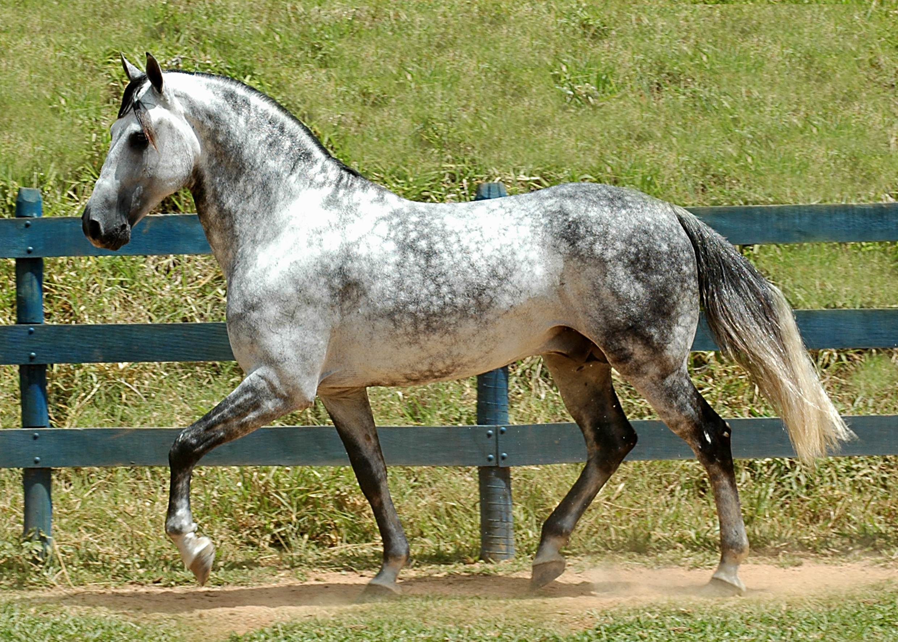

MANGALARGA MARCHADOR
O Mangalarga Marchador é uma raça brasileira, onde há mais de meio milhão deles; está entre as raças mais numerosas de cavalo de montaria do mundo.
Esta raça Deriva do cruzamento cavalos da raça Alter Real com a raça Crioulo O Mangalarga Marchador é famoso pelo seu andamento de marcha, marcha batida e marcha picada. | Características | |
| Andamento | marcha batida, marcha picada |
| Cabeça | Proporcional, com perfil reto ou ligeiramente convexo, e perfil nobre |
| Pescoço | Elegante, bem inserido e de comprimento médio |
| Tronco | Compacto, bem musculoso, com costelas bem arqueadas |
| Pernas | Fortes, bem anguladas, com bom aprumo e articulações bem definidas |
| Pelagem | Densa e brilhante, com boa capacidade de adaptação a diferentes climas |
| Temperamento | Dócil e equilibrado |